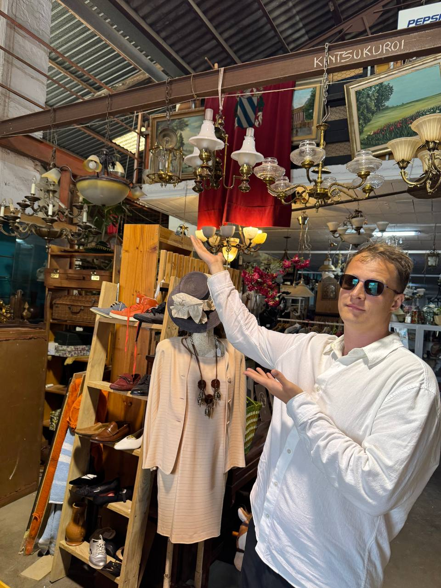

Last updated: 1 May 2026
Portobello Road Market: A UK Reseller Guide for 2026
Portobello Road Market is the UK’s largest antiques market — about 1,000 vendors stretched along 940 metres of west London street, plus a dozen named arcades. If you’re sourcing UK antiques, vintage, or vintage clothing for resale, the Notting Hill market is a Saturday must-do once. After that you’ll know whether to come back every weekend or focus on the dedicated UK antiques fairs like Newark and Ardingly instead.
This guide is built from the official market data plus visitor reports from r/london, r/Antiques, and r/AskUK. The interesting stuff isn’t in the tourism brochures — it’s things like which day is actually best for vintage clothing, which arcade has the most dealer turnover, and what’s a tourist trap.
“After our first sourcing trip to France we wanted to map London’s antique markets properly. Portobello on Saturday, Brick Lane on Sunday, Sunbury on Tuesday — that’s the rhythm we settled on.” — Oleksandr Prudnikov, FlipperHelper developer and active reseller
Quick navigation
- What is the Portobello Road Market?
- When is the Notting Hill market open?
- The antique arcades — Saturday morning priority
- Friday is the vintage clothing day
- How to get there
- What’s actually worth buying for resale?
- Cash, card and haggling
- Portobello vs. Saint-Ouen vs. Camden vs. Brick Lane
- 2026 dates UK resellers should know
- Frequently asked questions
Last verified: 1 May 2026 against visitportobello.com, Visit London, and the London Museum.
What is Portobello Road Market?
Portobello Road Market runs along Portobello Road in Notting Hill, in the Royal Borough of Kensington and Chelsea. It’s actually five overlapping markets in one street, with each section trading on different days and selling different things. Plus there are about 12 named indoor antique arcades clustered at the south end — permanent dealer halls that complement the outdoor stalls.
The whole stretch is roughly 940 metres long. From south (Notting Hill Gate end) walking north towards Golborne Road, you pass through:
- Antiques — Saturday is the big day. Indoor arcades plus outdoor stalls
- Fresh fruit & veg — daily, the working market for residents
- Household goods & fashion — Friday and Saturday, mid-stretch
- Vintage clothing & collectables — under the Westway and at Portobello Green. Friday is the vintage clothing day
- Bric-a-brac, second-hand, furniture & food — at the north end, including Golborne Road. Friday and Saturday
If you’re reselling, you mostly care about sections 1, 4, and 5.
When is the Notting Hill market open? (Portobello opening hours by day)
| Day | Hours | What’s open |
|---|---|---|
| Mon–Wed | ~9:00–18:00 | Limited — mostly fruit/veg + household. Antique arcades partially open |
| Thursday | ~9:00–13:00 | Half-day. Fruit/veg only |
| Friday | 9:00–19:00 | Whole-market trading. Vintage clothing day at Portobello Green / Westway / Golborne. Second-busiest overall |
| Saturday | 9:00–19:00 (antique arcades from 7:00) | The big day — all five sections + arcades |
| Sunday | Closed | Limited trading on Thorpe Close + Acklam Road only |
For UK resellers the question becomes: Friday or Saturday? Saturday has more vendors and more buzz; Friday has more breathing room and the vintage clothing focus.
Two regulars on r/london made the case clearly: “Friday morning at Portobello is calmer, you can actually look at things, and the antique dealers will talk to you.” Versus: “Saturday is the proper Portobello experience — if you only go once, it has to be Saturday.”
If you’re sourcing for resale rather than tourism, go Friday. Saturday crowds genuinely slow you down through the antique stretch, and dealers don’t haggle as readily when there’s a queue behind you.
The antique arcades — Saturday morning priority
The named antique arcades cluster between roughly 65 and 149 Portobello Road (south end). They’re indoor, they open earlier than the street stalls (most from 7am Saturday), and they’re where the serious dealers operate from permanent stalls.
The biggest is Admiral Vernon Antiques Market (139–149 Portobello Road, W11 2DY) — about 190 dealers under one roof, the flagship of the Portobello arcades. Specialisations include silver, jewellery, watches, militaria, china, glass, books, and prints.
Other arcades worth knowing about (addresses walking south to north from Notting Hill Gate):
- Rogers Antiques Gallery — 65 Portobello Road
- Chelsea Galleries — 67–73 Portobello Road
- Portobello Antique Store — 79
- The Red Teapot Antique Arcade — 101–103
- The Antique Arcade — 113
- Crown Arcade — 119 (verify it’s open before relying on it — some directories list it as closed)
- Admiral Vernon Antiques Market — 139–149 (the main one)
Most arcades trade Friday and Saturday only, 9am–5pm. A couple open on quieter weekdays as well.
Friday is the vintage clothing day
This is officially confirmed by visitportobello.com (the trade association) but missed by many tourist guides: Friday is when the vintage clothing trade runs at full strength, around Portobello Green and under the Westway, plus Golborne Road at the north end. Friday is also Golborne’s busiest day overall.
Saturday has more vintage stalls in absolute terms because the whole market is bigger, but Friday has fewer tourists, calmer crowds, and dealers more willing to negotiate. If you’re Vinted-flipping or Depop-flipping, Friday is your day.
How to get there
By tube:
- Ladbroke Grove (Hammersmith & City + Circle lines) — 5 minutes’ walk to the antiques section. Best for Saturday morning antiques
- Notting Hill Gate (Central, District, Circle) — 10 minutes from the south end. Useful if you’re combining with shops on the Notting Hill side
- Westbourne Park (Hammersmith & City + Circle) — 10 minutes to Golborne Road, best for vintage clothing on Friday
By car: Don’t bother on Saturday — parking is a nightmare and Portobello Road itself is partially closed to traffic. If you must, pre-book a residential bay via JustPark or YourParkingSpace.
Address: Portobello Road, London W10 5RU (north end) / W11 2EU (south end).

What’s actually worth buying for resale?
The honest answer from r/london and r/Antiques: watch out for the “new stuff dressed as vintage” problem. A regular put it this way: “A lot of Portobello on Saturday is reproduction or new merchandise — you have to know what you’re looking at.”
What works for UK resellers, based on consensus from antique-trade Reddit and the dealer profiles in Admiral Vernon and the southern arcades:
- Sterling silver & gold jewellery — deep dealer presence, mostly genuine. Hallmarks visible on the spot
- British china & ceramics — Royal Doulton, Moorcroft, Wedgwood, Beswick. Specialised dealers in the arcades
- Antiquarian books — particularly first editions and signed copies. Well-priced compared to specialist UK book fairs
- Watches & clocks — vintage Rolex, Omega, Seiko. Less competition than dedicated watch fairs
- Vintage clothing & designer items — on Friday especially. Burberry, Barbour, vintage Levi’s, occasionally Chanel/Hermes
- Maps, prints, militaria — specialist dealers, fair pricing, strong eBay resale market
What to be careful with: furniture is rare on Portobello Road itself and what does appear is in the high-end arcades at high-end prices. For UK furniture sourcing, the dedicated antique fairs (Newark IACF, Ardingly, Sunbury) are better. For Saturday markets specifically, head to the bric-a-brac at the north end of Portobello if you’re after smalls.
Cash, card and haggling
Most stalls and arcade dealers take card now, but cash is still useful for haggling. The convention: a polite question rather than a hard offer (“is that your best price?”). Multi-item bundles get the best discounts. Don’t lowball — experienced dealers take it badly and you’ll get worse prices on round two.
One regular reseller’s rule from r/Antiques: “Late in the day — 4 or 5pm Saturday — vendors knock prices down because they don’t want to pack things up. That’s when you fill your bag.”
Wet weather contingency
If it’s pouring, the outdoor stalls pack up early. The antique arcades (Admiral Vernon, Chelsea Galleries, Crown) are indoor and unaffected — you can still do a productive Saturday. The Westway-covered section at Portobello Green also stays dry, which is convenient because that’s where the Friday vintage clothing crowd is anyway.
Portobello vs. Saint-Ouen vs. Camden vs. Brick Lane
If you’re building a UK or Anglo-French sourcing route, here’s how Portobello compares:
- Portobello (Saturday, west London) — ~1,000 vendors, UK’s largest antiques market. Strong on smalls: jewellery, ceramics, books, prints, vintage clothing. Limited on furniture
- Marché aux Puces de Saint-Ouen (Sat-Mon, Paris) — ~2,000 dealers, world’s largest antiques market. Strong on furniture (Paul Bert Serpette especially), high-end pieces, vintage designer. Eurostar from London makes it doable in a day. Full guide here
- Camden Market (daily, north London) — ~1,000 vendors but mostly fashion, alternative culture, food. Almost no antique focus — tourist-skewed. Skip for sourcing
- Brick Lane Market (Sunday, east London) — five sub-markets in one. Vintage, second-hand furniture, electrical, bric-a-brac. Sunday is the standout option — pairs perfectly with Portobello Saturday for a London weekend
- Camden Passage (Wed/Sat, Islington) — smaller and more curated than Portobello. Antiques majority. Worth a Wednesday visit if you can’t make Portobello
2026 dates UK resellers should know
Notting Hill Carnival 2026 falls on 29–31 August. The whole area shuts down for the weekend with major road closures from Sunday morning. Don’t plan a Saturday Portobello run on 29 August 2026 — trading is heavily disrupted that weekend.
Christmas Sundays: Portobello traditionally opens three extra Sundays in December for Christmas trading (typically the first three Sundays of December). 2026 dates not yet officially published — check visitportobello.com closer to autumn 2026.
Frequently asked questions
What are the Portobello Road Market opening hours?
Saturday is the main day, 9:00–19:00, with the antique section from 7:00. Friday is the second-busiest, full street trading. Mon–Wed have limited trading. Thursday is half-day. Sunday is mostly closed apart from limited stalls on Thorpe Close and Acklam Road.
Is Portobello Road open on Sunday?
Mostly closed on Sundays. For a Sunday London antique fix, go to Brick Lane Market (E1) instead — 10:00–17:00 Sundays.
Which day at Portobello is best for vintage clothing?
Friday. Officially the vintage clothing day around Portobello Green, the Westway-covered section and Golborne Road. Saturday has more vendors overall but Friday’s vintage focus is denser.
How big is Portobello Road Market?
About 1,000 vendors on Saturday across 940 metres of street, plus the named antique arcades. Some sources cite up to 1,500 dealers on busy weekends. UK’s largest antiques market by vendor count.
What’s the closest tube to Portobello Road Market?
Ladbroke Grove (Hammersmith & City + Circle) is closest, ~5 minutes walk. Notting Hill Gate is ~10 minutes from the south end. Westbourne Park is ~10 minutes to Golborne Road.
Can I haggle at Portobello?
Yes, particularly at the antique arcades. Polite framing works better than hard offers (“is that your best price?”). Bundling multi-item buys gets the best discounts. Cash is still useful even though most dealers take cards. Late Saturday afternoon is when prices drop.
Is Portobello a tourist trap?
Partly — the south stretch around the Notting Hill end is dense with souvenir-style stalls and reproduction antiques aimed at first-time visitors. The genuine antique trade is in the named arcades (Admiral Vernon, Chelsea Galleries, Rogers) and at the north end of the market around Portobello Green and Golborne Road. Know which sections to skip and you’re fine.
Related reading
- Marché aux Puces de Saint-Ouen: A UK Buyer’s Guide — if Portobello is the UK’s biggest, Saint-Ouen is the world’s
- Best French Brocantes 2026: UK Reseller Sourcing Calendar — the wider French calendar for UK travellers
- UK Car Boot Sales Near Me: 2026 Sunday Calendar — cheaper sourcing, less curated, higher reseller margin
- Best Items to Resell in the UK — what sells well after sourcing
Track your Portobello finds with FlipperHelper
Free app for iOS and Android. Multi-currency, offline support, photo + price + source per item. Useful when you’re sourcing across London markets and trying to keep your eBay margins straight at the end of the week.
Download Free on the App StoreGet it Free on Google Play